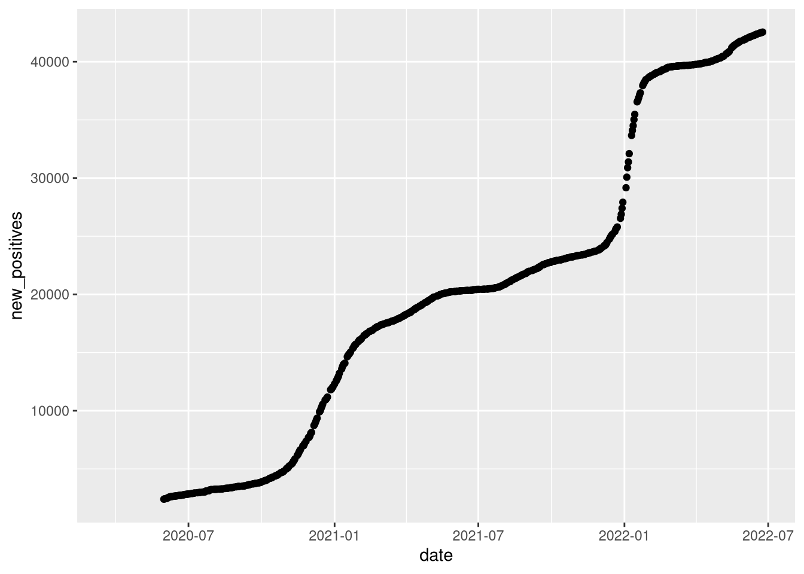
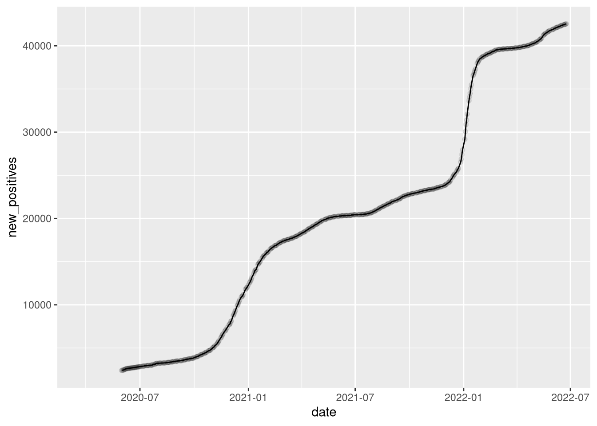
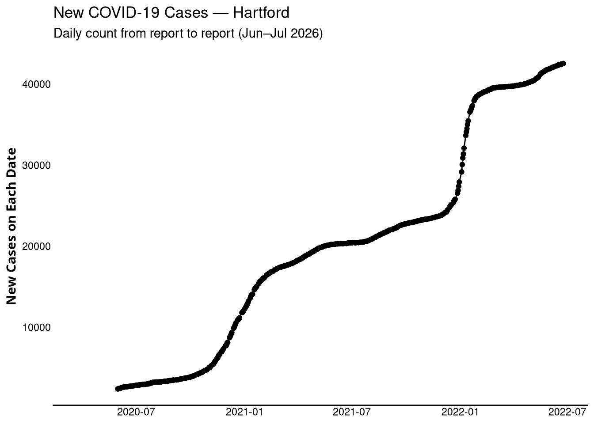
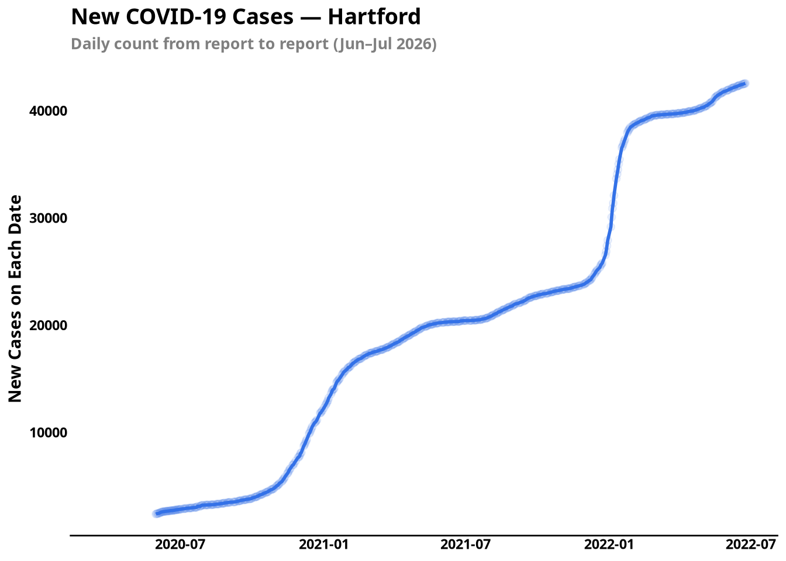
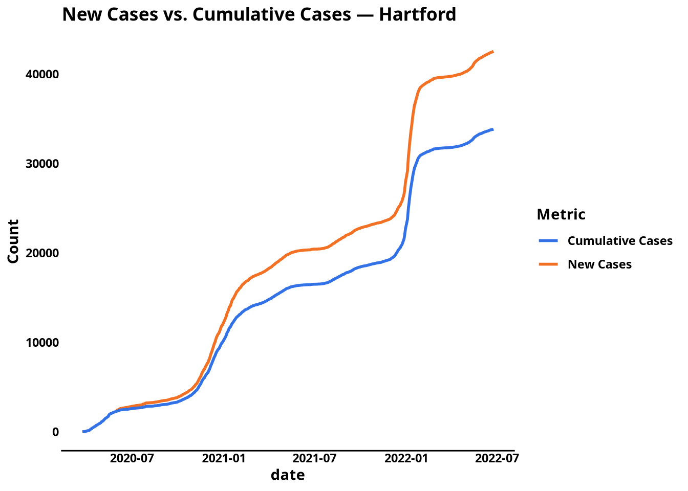
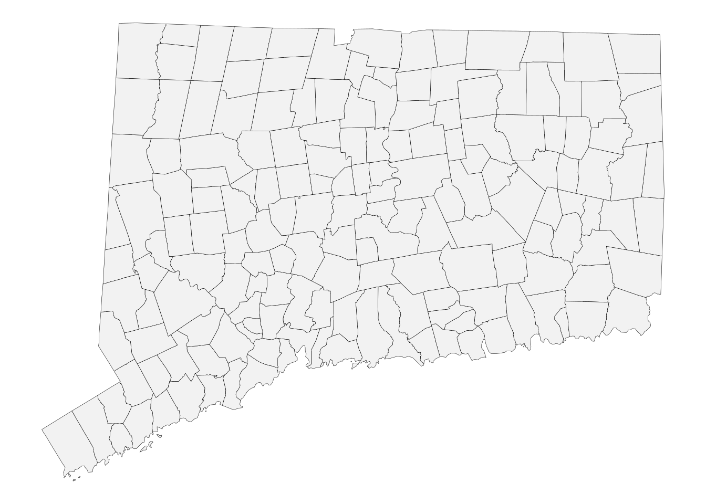
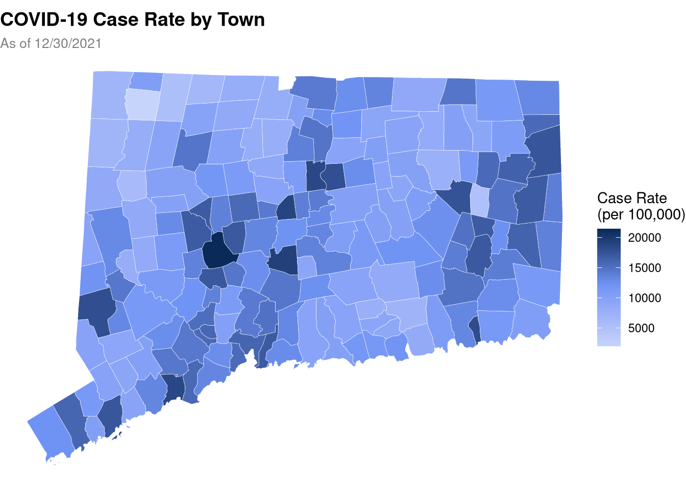

install.packages("ggplot2")
# You'll also install extra packages later in this chapter for
# mapping and choropleths.
install.packages(c("tigris", "sf", "mapview"))6 Visualizing Your Data
Earlier we filtered Hartford’s data down to a single tidy tibble. You looked at the rows in your console and we moved on. This is great for getting a feel for the data, but it doesn’t necessarily make it easy to get a feel for how the data change over time.
This chapter teaches you how to turn that tibble into a plot that tells the story to someone else — the Commissioner, a journalist, a colleague who doesn’t want to open a CSV.
ggplot2 gives you a grammar — a language for describing what you want the plot to show and it handles the drawing.
6.1 Installing ggplot2
Before this chapter can work, install the package once.
Load ggplot2 along with the packages you’ve used so far:
library(ggplot2)6.2 Building a plot layer by layer
6.2.1 The Grammar of Graphics
ggplot2 is built on a principle called the Grammar of Graphics. It says every plot is made of layers, each adding something to the picture:
| Layer | What it does | Example |
|---|---|---|
| Data | The tibble to plot | hartford |
| Aesthetic mapping | Which columns go on which axis, or to color, size, etc. | x = date, y = new_positives |
| Geometric object | The shape of the marks | dots, lines, bars, areas |
| Theme | Non-data ink: fonts, backgrounds, axis styling | removal of grid lines, different fonts |
Think of it like making a tiered cake. Data are at the bottom - the biggest layer on which everything is built on top of. Aesthetics are next, and then geometry and finally theme is the the very top. ggplot2 code is more or less written in layers, and it is a helpful mental model that will aid you when you reach for ggplot2 for data story telling.
6.2.2 Your first plot: a scatter plot
We’ll start with the scatter plot.
ggplot(
data = hartford,
mapping = aes(
x = date,
y = new_positives
)
) +
geom_point()
We take our data, our aesthetic and our geometry and we’re already telling stories with those 3 things.
Let’s read them back:
ggplot()starts the plot, supplies the data and the aesthetic mapping (aes) that says “dategoes on the x-axis andnew_positivesgoes on the y-axis”.+ geom_point()adds the layer of dots. The+is what joins layers inggplot2— always with a space before and after the+.- Every geometry layer inherits the data and aesthetics from
ggplot()unless you override them insideaes()for that specific layer.
The default ggplot2 output works well for internal work, but a briefing needs something cleaner. Let’s build on that first plot.
6.2.3 From dots to a line
Our data is a time-series: date on the x-axis, values on the y-axis. A line makes the trend easier to read.
ggplot(
data = hartford,
mapping = aes(
x = date,
y = new_positives
)
) +
geom_line()
With changing nothing else but the geometry we were able to change the type of plot. This is handy for trying many different kinds of plots with the same data or running different subsets of data through the same geometry to make plots for multiple reports.
This plot still has the default theme’s gray background and the default axis labels read like column names. We’ll work through each of those and make it more presentable.
6.2.4 Title, axis labels, and theme
labs() replaces the automatic labels from column names and adds a title. We use custom CT DPH theme functions to give our plots a clean look — a quick reference lives in the callout below.
NoteCT DPH custom themes
To save time and typing, we will be using CT-DPH specific themes that are saved inside of functions.
| Function | What it does |
|---|---|
theme_ct_vertical() |
Removes the y-axis line and tick marks; use for vertical plots. |
theme_ct_horizontal() |
Removes the x-axis line and tick marks; use for wide/horizontal plots. |
theme_poppins_bold_all() |
Sets Poppins, bold face, everywhere in the plot. |
And palettes of named CT DPH brand colors:
| Function | Colors |
|---|---|
list_ct_primary_colors() |
primary, primary_shade1 … primary_shade4 |
list_ct_secondary_colors() |
secondary, secondary_shade |
list_ct_tertiary_colors() |
tertiary, tertiary_shade |
These come from the CT DPH brand guide - use the variables, not hex literals, so the branding can change in one place. Further Reading for the full list, code snippets, and tips on plugging colors into ggplot2 scales.
# you can also pipe your data into a plot!
hartford |>
ggplot(
mapping = aes(
x = date,
y = new_positives
)
) +
geom_point() +
geom_line() + # you can add multiple geometries together
labs(
title = "New COVID-19 Cases — Hartford",
subtitle = "Daily count from report to report (Jun–Jul 2026)",
x = NULL, # use NULL or an empty string "" to remove the x axis title
y = "New Cases on Each Date"
) +
theme_ct_vertical()
x = NULL removes the x-axis label entirely — the title is enough, and everyone reading this knows it shows dates.
6.2.5 Adding color
The default plot line uses the first color in the ggplot2 palette. In public health work you probably want a specific color or branding from your organization.
Map the color aesthetic to a string (a color name) to tint both points and line:
ggplot(data = hartford, mapping = aes(x = date, y = new_positives)) +
geom_point(color = "#3371E7", size = 2, alpha = 0.1) + # alpha sets the transperancy
geom_line(color = "#3371E7", linewidth = 0.5) +
labs(
title = "New COVID-19 Cases — Hartford",
subtitle = "Daily count from report to report (Jun–Jul 2026)",
x = NULL,
y = "New Cases on Each Date",
caption = 'Data as of 2026'
) +
theme_ct_vertical() +
theme_poppins_bold_all() +
theme(
#inside of theme we can interact with specific plot elements and sub-elements
plot.title = element_text(face = "bold", size = 14),
plot.subtitle = element_text(size = 10, color = "gray50")
)
Two things to notice:
color = "#3371E7"is set outsideaes()because it’s a fixed value, not a column. Insideaes(), R would try to map the literal word “#3371E7” to a legend. You rarely want that.theme_poppins_bold_all()brings the Poppins font everywhere, but we still tweakplot.titleandplot.subtitleseparately for sizes. Theme layers stack — later ones fill gaps left by earlier ones.
That last plot is the kind of thing you’d paste directly into a briefing slide. You built it piece by piece, and each piece does one thing.
6.2.6 Saving the plot
When you’re happy with a plot, save it to outputs/figures/:
ggsave(
here("outputs", "figures", "hartford_new_cases.png"),
width = 7,
height = 4,
dpi = 300
)ggsave() saves the last plot you rendered. No need to name it explicitly — just call it immediately after running the plot.
6.3 Aesthetic mapping
So far you’ve been setting the position of the plot (x and y axis). ggplot2 also maps aesthetics to other properties:
| Aesthetic | What it controls | Accepts |
|---|---|---|
x, y |
Position on the axes | numeric, date, character |
color |
Stroke/border color of points and line | column name or fixed color |
fill |
Fill color of bars, areas | column name or fixed color |
size |
Size of points or line thickness | column name or fixed size |
shape |
Point shape (0–24 different shapes) | column name or fixed shape |
alpha |
Transparency (0 = invisible, 1 = opaque) | column name or fixed value |
linetype |
Dashed, dotted, etc. | column name or fixed value |
When you put a column name inside aes(), ggplot2 creates a legend that tells the reader which values map to which colors, sizes, shapes etc. When you set one outside aes(), the value is fixed and no legend is generated.
To see it in action, add a second line to the same plot — one for total_cases (cumulative) — by mapping y to a column:
#TODO - I don't like this, maybe use deaths or something
ggplot(data = hartford, mapping = aes(x = date)) +
geom_line(aes(y = new_positives, color = "New Cases"), linewidth = 1) +
geom_line(aes(y = total_cases, color = "Cumulative Cases"), linewidth = 1) +
scale_color_manual(
name = "Metric",
values = c("New Cases" = "#F27124", "Cumulative Cases" = "#3371E7")
) +
labs(
title = "New Cases vs. Cumulative Cases — Hartford",
y = "Count",
color = "Metric"
) +
theme_ct_vertical() +
theme_poppins_bold_all()
6.4 Choropleth maps
A scatter plot shows change over time. A map shows change across space. For a state-level briefing, the Commissioner might want to see case counts across all the towns at once.
The tigris package fetches official boundary files from the Census Bureau. In our case, we want town boundaries for Connecticut:
library(tigris)
library(sf)
# Fetch CT town boundaries
ct_towns <-
county_subdivisions(
state = "09",
cb = TRUE,
progress_bar = FALSE
)
# Show just the outlines on a blank canvas
ct_towns |>
ggplot() +
geom_sf(fill = "gray95", color = "black", linewidth = 0.1) +
theme_void() # use this for a blank background
Remember our cake analogy? This is our basemap that we will use to layer additional features on top of.
That’s Connecticut’s 169 towns — just outlines. geom_sf() draws spatial data (the sf geometry column). The rest follows the same pattern as every other ggplot2 plot: ggplot() + geom_sf() + labs() + theme().
6.4.1 Coloring towns by case rate
Now join the COVID data to the map by town name and map fill to the case rate:
# Summarize cases by town on the latest date
latest_date <- max(covid_data$`Last update date`, na.rm = TRUE)
town_cases <-
covid_data |>
filter(`Last update date` == latest_date) |>
select(
Town = Town,
case_rate = `Case rate`,
total_cases = `Total cases`
) |>
rename(name = Town)
# Join COVID data to spatial data
ct_bounded <-
ct_towns |>
left_join(town_cases, by = join_by(NAME == name))
TipWhat just happened:
left_join explained
left_join(x, y, by) keeps every row from the left table (x) and adds matching columns from the right table (y). Where there’s no match, the new columns are filled with NA. Think of it as: “give me all the towns, and bring in any COVID numbers that line up.”
We cover joins in detail in a later chapter — see Further Reading for the full guide.
# Choropleth: gray for towns without data, blue gradient for those with
# TODO: clean up the data
ggplot() +
geom_sf(
data = ct_bounded[is.na(ct_bounded$case_rate), ],
fill = "gray95",
color = "white",
linewidth = 0.1
) +
geom_sf(
data = ct_bounded[!is.na(ct_bounded$case_rate), ],
mapping = aes(fill = case_rate),
color = "white",
linewidth = 0.1
) +
scale_fill_gradient2(
low = "#C6D4FB",
mid = "#7094F5",
high = "#00214D",
midpoint = mean(ct_bounded$case_rate, na.rm = TRUE),
na.value = "gray95",
name = "Case Rate\n(per 100,000)"
) +
labs(
title = "COVID-19 Case Rate by Town",
subtitle = paste("As of", latest_date),
fill = NULL
) +
theme_void() +
theme(
plot.title = element_text(face = "bold", size = 14),
plot.subtitle = element_text(size = 10, color = "gray50"),
legend.position = "right"
)
The choropleth tells at a glance which towns carry the heaviest burden. Towns without data (suppressed for small sample sizes) appear gray.
Note
geom_sf() replaces geom_point(), geom_line(), and others when your data is spatial. It reads the geometry column automatically and draws polygons, lines, or points based on the geometry type.
Note
This chapter gave you the foundations of ggplot2 and a taste of spatial visualization. The next chapters add tables (gt), Quarto report-building, functions, and API fetching — the full arc from raw data to self-updating report.